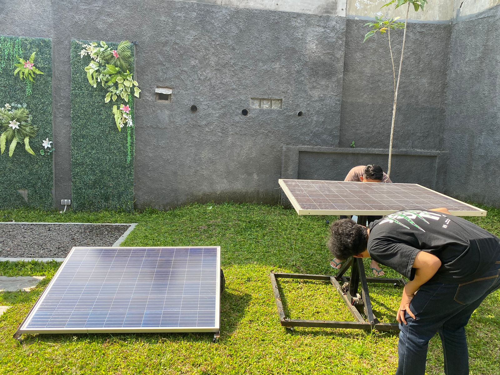

Smarter Solar: Building an IoT-Based Flexible PV System
Mengoptimalkan Energi Surya dengan Tracking dan Monitoring Real-Time ☀️

Energi surya sudah menjadi solusi yang kuat untuk kebutuhan energi berkelanjutan. Namun, bagaimana jika kita bisa membuatnya lebih cerdas? Proyek ini mengeksplorasi sistem photovoltaic (PV) dengan sumbu fleksibel yang dikombinasikan dengan monitoring berbasis IoT secara real-time.
Tujuannya sederhana: memaksimalkan penyerapan energi sekaligus memberikan visibilitas penuh terhadap performa sistem dari mana saja.
🔄 Mengikuti Matahari untuk Efisiensi Maksimal
Berbeda dengan panel surya statis, sistem ini dirancang untuk menyesuaikan orientasi panel secara dinamis mengikuti pergerakan matahari sepanjang hari. Dengan sudut yang selalu optimal, energi yang ditangkap dapat meningkat secara signifikan.
Selain itu, sistem juga dilengkapi dengan monitoring IoT yang memungkinkan pengguna melihat performa secara real-time, termasuk:
- Voltage
- Current
- Power
Data ini dikirim secara wireless dan dapat diakses dari jarak jauh, membuat sistem lebih transparan dan mudah dalam pemeliharaan.
📡 IoT dan Monitoring Energi
Sistem monitoring dibangun menggunakan ESP8266 sebagai pusat pemrosesan dan komunikasi data.
Untuk mendapatkan data yang akurat:
- Arus diukur menggunakan ACS712
- Tegangan diukur menggunakan voltage divider
- Data dikonversi menggunakan ADS1115 (16-bit ADC)
ADC berkomunikasi dengan ESP8266 melalui protokol I²C, memungkinkan pembacaan data multi-channel dengan presisi tinggi.
🛠️ Peran Saya dalam Proyek
Fokus utama saya adalah pada desain sistem pengukuran untuk memastikan data yang diperoleh akurat, stabil, dan dapat diandalkan.
🔌 Electrical & Wiring Design
Saya merancang sistem pengukuran arus menggunakan ACS712 serta pengukuran tegangan menggunakan voltage divider yang telah dikalibrasi, dengan perhatian khusus pada integritas sinyal dan noise.
📊 Integrasi Sensor dengan ADC
Saya mengintegrasikan sensor dengan ADS1115 untuk mendapatkan resolusi tinggi dan akurasi yang lebih baik, memanfaatkan fitur multi-channel dan komunikasi I²C.
📡 Komunikasi Microcontroller
Saya mengimplementasikan komunikasi antara ADC dan ESP8266, termasuk alur pembacaan data dan persiapan data untuk transmisi IoT secara real-time.
🚀 Kenapa Proyek Ini Penting?
- ✅ Efisiensi energi meningkat dengan solar tracking
- ✅ Monitoring performa secara real-time
- ✅ Akses data dari jarak jauh melalui IoT
- ✅ Memudahkan diagnosis dan maintenance
🌱 Penutup
Proyek ini menunjukkan bagaimana kombinasi antara hardware dan IoT dapat meningkatkan sistem energi konvensional. Ini bukan hanya tentang menghasilkan energi, tetapi juga tentang memahami dan mengelolanya secara cerdas.
Dengan pendekatan seperti ini, energi surya menjadi lebih adaptif, efisien, dan siap untuk kebutuhan masa depan.